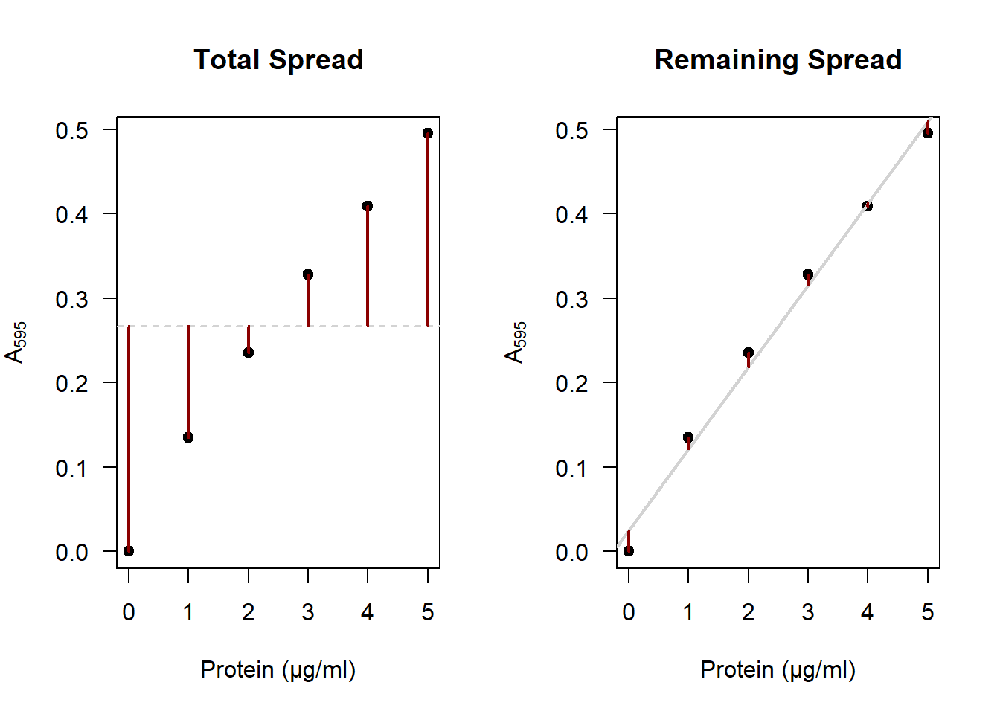
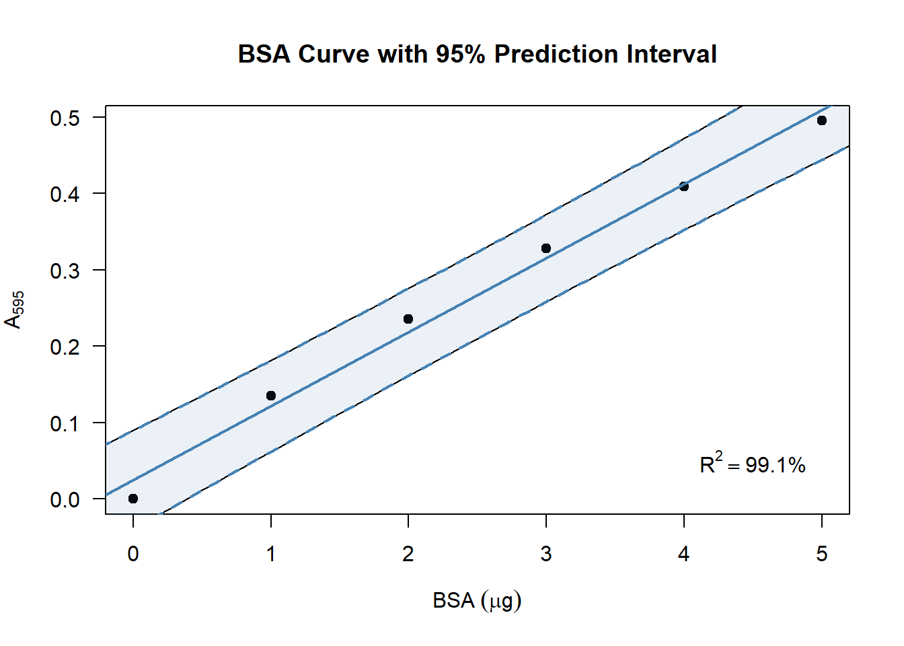

Chapter 4 BSA Curve
Skills learned in this chapter: Estimation, Prediction
In this chapter you will learn how to construct a BSA-curve for estimating the amount of protein present in a sample.
## Here will be a video on BSA curves4.1 What Is a BSA Curve?
In the basic practicals you will use a spectrophotometer to measure light passing through a sample with a known protein concentration. By doing so for various concentrations of protein, you can construct a curve for the amount of protein present in a sample, given the amount of light passing through. This is a basic tool in biological experimentation. The protein used as a reference to construct the curve is called Bovine Serum Albumin (BSA).1 Hence the name: BSA curve.
| BSA \((\mu\text{g})\) | Absorption \((\text{A}_{595})\) |
|---|---|
| 0 | 0.000 |
| 1 | 0.135 |
| 2 | 0.235 |
| 3 | 0.328 |
| 4 | 0.409 |
| 5 | 0.495 |
Figure 4.1: A typical BSA curve, constructed from the data in table 4.1.
In the first part of this assignment, you will construct a BSA-curve based on your experimental data. In the second half, we are going to express the uncertainty of the estimation.
4.2 How to Contruct a BSA-Curve in R
As an example, I will show you how to construct a BSA curve from the example data shown in table 4.1.
4.2.1 Enter your data
First we create a data frame containing the BSA amounts and the observed \(\text{A}_{595}\) values.
This will create an object DF in the object space. You can view it by clicking on it in the environment tab of the upper-right pane in RStudio.
4.2.2 Fit a Simple Linear Model
Watch the first two minutes of this video on simple linear regression. For now, if you understand the following terms, you can continue:
- Positive/negative linear relationship;
- Intercept & slope.
In R, you can estimate the intercept and slope as follows:
How that works will be explained in the statistics course. For now, let’s extract the intercept and slope from this model:
## (Intercept) BSA
## 0.02485714 0.09685714The estimated line pretty much goes through the origin,2 with an intercept of about 0.02. We can also see that there is a positive linear relationship between the amount of BSA and the absorbance: For every microgram of BSA added, the absorbance increases by about 0.1.
4.2.3 Plot your data & draw a line
Finally we create a plot and add a line as follows:

It looks a bit basic, but this is all you need to produce a BSA curve. Of course you can improve your figure if you want, by using more advanced plotting routines.
4.3 Using a BSA Curve for Estimation
Let’s say you measured the absorbance of the sample of interest and ended up with a value of \(\text{A}_{595} = 0.264\). Using the BSA curve, you can estimate the amount of protein as shown in the figure below:
Figure 4.2: To estimate the amount of protein, look at the \(\text{A}_{595}\) on the y-axis, then see which position it corresponds to on the x-axis.
Apparently the sample of interest has the same absorbance as a BSA sample of about \(2.5\) microgram.
If you want a more precise estimate, you have to use the equation of the model we just fitted:
\[\begin{equation} \text{A}_{595} = \text{intercept} + \text{slope}\times\text{BSA} \tag{4.1} \end{equation}\]
If we fill in the example, we get:
\[ \begin{aligned} 0.264 &= 0.02485714 + 0.09685714 \times \text{BSA} + 0 \\ \\ \text{BSA} &= \frac{0.264 - 0.02485714}{0.09685714} \approx 2.47 \end{aligned} \]
Which is approximately equal to the \(2.5\) we read from figure 4.2.
Question:
- Can you read from your own figure the amount of protein in the sample of interest?
- Perform the estimation using eq. (4.1) with your own BSA curve and your own observed absorbance:
- If you have performed the experiment twice or more, you can average the absorbance for a more precise answer;
- Make sure to adjust for any dilution you applied to the sample.
4.4 How Precise Is the Estimate?
I’m sure you’ve noticed that the observations do not exactly fall on the line. The regression model is but an approximation of the true relationship. This is caused by many things:
- No matter how careful you are, the amount of BSA cannot be weighed exactly;
- The spectrophotometer does not have infinite precision;
- Any dilutions applied can introduce small errors;
- The true relationship is probably not perfectly linear.
It is more than likely that if you perform the experiment again, you will obtain slightly different values. Even if you take great care, there is always uncertainty. At best, you can keep that uncertainty low.
So how much uncertainty is there? How do we express that? Below I will discuss a simple measure to include in your plot, and a great way to visualize the uncertainty.
4.4.1 R-squared
\(R^2\) is the amount of variance explained by the model. In other words: How much of the total variance in \(\text{A}_{595}\) can be explained by the line?
The red segments on the right represent the original spread in \(\text{A}_{595}\),3 and on the right we see the spread that is left after accounting for our model. You can clearly see that the distances on the right are much smaller than on the left. If you square these segments and sum them, that is called the variance. \(R^2\) is then calculated as:
\[R^2 = 1 - \frac{\text{remaining variance}}{\text{total variance}}\]
R includes this value in the summary of a linear model by default. You can obtain it as follows:
## [1] 0.9913461Apparently the BSA curve explains around \(99.1\%\) of the total variance in absorbance. This is quite a large amount: Only \(0.9\%\) of the variance is unexplained. A higher \(R^2\) value means there is less uncertainty.
Question:
- What is the value of \(R^2\) using your own experimental data?
- How could you obtain a higher \(R^2\)?
4.4.2 Prediction interval
Where would you expect 95% of the future observations of \(\text{A}_{595}\) to be? That is the question a 95% prediction interval answers. Though its calculation is beyond the scope of this chapter, generating such an interval along the BSA curve in R can be done in a few lines of code:
plot(A595 ~ BSA, data = DF)
abline(coef(model))
newX <- data.frame(BSA = seq(0, 5, 0.1)) # 0.0, 0.1, ..., 4.9, 5.0
newY <- data.frame(predict(model, newX, interval = "predict"))
newDF <- cbind(newX, newY)
lines(lwr ~ BSA, data = newDF) # lower bound of the interval
lines(upr ~ BSA, data = newDF) # upper bound of the interval
Question:
- Produce a prediction interval for your own BSA curve? Try it by copying the code above and adjusting it if you like.
- Figure ?? showed how to estimate the protein concentration of a sample of interest. Now that you have a prediction interval around the line, within which values do you expect the protein concentration to be?
4.5 Improving your figure (*)
In the examples so far, I tried to keep the coding part simple. Here I will show how to reproduce the figure by expanding the code a bit. You can use whichever parts you like and change it. Using a hashtag (#), I will provide comments after each line to explain what it’s for.
4.5.1 Improving the main plot
Using some tricks described in the help page of plotmath, you can add proper annotation to your axes:
4.5.2 Highlighting the line
For emphasis, I changed the width and color of the line:
4.5.3 Adding a grid
You can add a grid if you like. If you do add a grid, keep three things in mind:
- Don’t use
grid. This function is so dumb that even its help page admits you’re better off usingabline:
Figure 4.3: Look closely at how the grid meets the axes on the left…
plot(A595 ~ BSA, data = DF, main = "wow great job, grid...")
grid(nx = 5, ny = 5)
abline(coef(model))
plot(A595 ~ BSA, data = DF, main = "abline to the rescue")
abline(h = seq(0, 0.5, 0.1), v = 0:5, col = "lightgray")
abline(coef(model))- Some prefer light on dark, others dark on light. I don’t mind either way. But avoid using a high contrast for your grid. It is not the main subject being plotted and thus should fall into the background:
Figure 4.4: A grid should have low contrast to avoid crowding the plot.
To add a colored background to your plot, insert the following line after the call to plot:
# Add this *after* your call to the plot function.
rect(par("usr")[1], par("usr")[3], par("usr")[2], par("usr")[4], col = "grey90")- When adding anything to a base R plot, R draws on top of the existing plot. That means it looks more professional if you redraw the points on top of the grid:
Bradford, Marion (1976): “A Rapid and Sensitive Method for the Quantification of Microgram Quantities of Protein Utilizing the Principle of Protein-Dye Binding”. Analytical Biochemistry. 72 (1–2): 248–254. doi:10.1006/abio.1976.9999. PMID 942051↩︎
The reason the line does not go exactly through zero is because it is only fitted to these 5 observations, which have uncertainty. You could force the line to go through zero, but that would worsen the estimate of the slope.↩︎
Shown on the left are the distances to the mean value of \(\text{A}_{595}\).↩︎